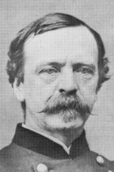

|

|

|
|
|
Lawyer, politician, ambassador and Civil War general, Daniel
Edgar Sickles was born on December 20, 1819 in New York City
to George Garrett Sickles and Susan Marsh Sickles. Sickles'
father was a prominent lawyer and politician, and Daniel
followed him into both careers. Sickles entered law school
at New York University and was admitted to the bar in 1843.
Shortly thereafter, Sickles launched his political
career, joining the New York Democratic political machine
that operated out of Tammany Hall. In 1847, Sickles was
elected to the New York Assembly, a position he left to
serve as secretary to James Buchanan, United States minister
to England. After his return from England in 1855, Sickles
won a seat in the New York Senate and later in the United
States House of Representatives, where he served from 1857
until 1861.
Sickles' political career was tarred by well-founded
accusations of corruption. A national scandal erupted when
the Congressman shot and killed his wife's lover in cold
blood on the streets of Washington DC. Sickles was
acquitted when his attorney, Edwin M. Stanton, defended him
on the grounds of 'temporary insanity.' In 1861, he
abandoned politics for the Union Army. He raised the
'Excelsior Brigade' in New York City. For that, he was made
a brigadier general. Promotions followed when Sickles
demonstrated some military ability in the Peninsula
Campaign, and at the battle of Fredericksburg. In May of
1863, Major General Daniel Sickles commanded the III Corps
at Chancellorsville. At that battle, Sickles ordered an
attack that contributed to the Union's defeat.
Sickles is best known for his infamous decision on the
second day at Gettysburg, when he joined the Federal army on
the field. Without informing his commander, General George
Meade, Sickles moved his corps way out in front of the rest
of the Union defensive line. This 'salient' created a
serious gap that allowed the Confederates under General
James Longstreet to launch a devastating attack against the
federals. A last minute save by General Winfield Scott,
commander of the II Corps, prevented a rout and the Union
line held. Sickles was badly injured in the leg by a cannon
ball while he was commanding his troops, and later it was
amputated. This injury removed Sickles from the battlefield
for the rest of the war.
Undaunted, Sickles returned to public life after the war
with the vigor of a man half his age. Active in
reconstruction politics, Sickles sided with the Radical
Republicans against the administration of President Andrew
Johnson. An ardent supporter of Ulysses S. Grant for
president in 1868, Sickles was appointed to the post of
Minister of Spain, 1868-1874. Sickles was elected in 1892
to the House of Representatives, again a Democrat. His major
legislative achievement was in securing the passage of the
act that enabled the federal government to acquire the
Gettysburg battlefield.
Sickles was widely criticized after the war for his
actions on July 2, 1863. Characteristically, he and his
supporters attacked Meade and the other top generals at
Gettysburg for failing to recognize the superiority of
Sickles' tactics. Although the criticism persisted, Sickles'
crusade influenced interpretations of Gettysburg in much of
the literature of his day. Sickles also participated widely
in efforts to preserve the battlefield as a historical site.
Sickles died of a cerebral hemorrhage on May 3, 1914 at
age ninety-four. He is buried at Arlington National Cemetery.
Source: Joan Waugh, ed., Facts on File Encyclopedia of American
History: Civil War and Reconstruction, 1856 to 1869 (New York: Facts on
File, 2003), 326-327.
|